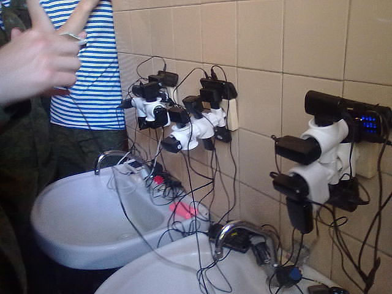
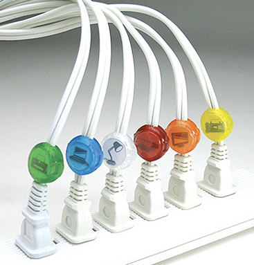

Como planejar um
projeto WordPress
Leo[nardo] Germani
- Sócio do hacklab
- Catraca Livre
- Virada Cultural
- Desenvolvedor WordPress
- Participação na comunidade e organização dos primeiros WordCamps
Guia prático
WordPress é uma ferramenta poderosa
Mas...
Ou...
O que queremos
Estrutura do WP
| Post Types | Taxonomias | Meta-dados |
|---|---|---|
| Posts | Categorias Tags |
--- |
| Páginas | --- | Ordem |
| Filmes | Gênero Sinopse Elenco Diretor Ano País ??? |
Gênero Sinopse Elenco Diretor Ano País ??? |
Hierarquia de Templates

Diálogo entre
- Sua arquitetura de informação
- Hierarquia de Templates
- Tabela de post types, taxonomias e meta-dados
Montando a estrutura
| Post Types | Taxonomias | Meta-dados | Templates |
|---|---|---|---|
| Posts | Categorias Tags |
--- | index.php single.php |
| Páginas | --- | Ordem | page.php |
| Filmes | Gênero Elenco Diretor Ano País |
Sinopse | archive-filmes.php single-filmes.php archive-genero.php archive-diretor.php ... |
Montando a estrutura
| Post Types | Taxonomias | Meta-dados | Templates |
|---|---|---|---|
| Home | front-page.php | ||
| Resultado de busca | search.php | ||
| Página não encontrada | 404.php |
Quando usar post type ou categorias de post?
- Sempre dê preferência a post types
- Fica mais organizado
- É mais claro pro usuário
- URLs mais bonitas
- Quando se pode usar categoria de posts?
- Quando você quiser misturar dois conteúdos na mesma listage (mas é possível fazer com post type)
Quando usar taxonomia ou meta-dado?
- Taxonomia
- Quando você quiser uma listagem automática
- Quando você quiser compartilhar valores entre posts
- Meta dado
- Quando for um conteúdo único e textual
- Quando você não quer que o usuário possa inventar novos valores
Para outras ocasiões
Page Templates ou Custom Rewrite Rules
Personalizando Listagens
pre_get_posts() e WP_Query
Personalizando Listagens
add_action('pre_get_posts', function($query) {
if ($query->is_post_type_archive('project') && $query->is_main_query()) {
$query->set('orderby', 'meta_value_num');
$query->set('meta_key', 'numero');
$query->set('order', 'ASC');
}
});
Personalizando Listagens
add_action('pre_get_posts', function($query) {
if ($query->is_post_type_archive('filmes') && $query->is_main_query()) {
$query->set('posts_per_page', -1);
$query->set('orderby', 'title');
$query->set('order', 'ASC');
}
});
Loop personalizado
<?php
$sections = new WP_Query(
array(
'post_type' => 'filmes',
'post_parent' => get_the_ID(),
'ignore_sticky_posts' => true,
'showposts' => -1,
'orderby' => 'title',
'order' => 'ASC'
)
);
?>
<?php if ($sections->have_posts()): ?>
<?php while ($sections->have_posts()): $sections->the_post(); ?>
<?php the_title(); ?>
...
<?php endwhile; ?>
<?php endif; ?>
<?php wp_reset_query(); ?>
Recaptulando
- Planejar sua arquitetura da informação
- Definir quais post types, taxonomias e metadados serão usados
- Definir e documentar os templates que devem ser criados
- Definir e documentar se será necessário personalizar alguma listagem
- Definir e documentar se algum template terá um Loop personalizado
Recaptulando
- Para não programadores
- Usar plugins para criar PTs, taxonomias e metadados
- Não ter medo de brincar com pre_get_posts e loops personalizados
- Para programadores
- Evitar o uso de plugins
- pre_get_posts e Loops personalizados
- Relação entre Post types
Adoraria ajudar com alguns casos concretos
Obrigado
leogermani@hacklab.com.br